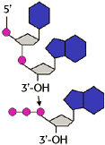
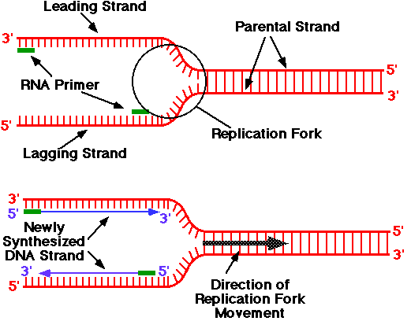
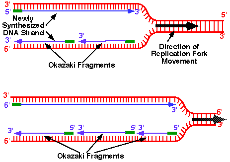

Nucleic Acids and the Genetic Material Problem Set 1
Problem 4: The replication fork

|
In this diagram of the process of DNA replication at a replication fork, the newly synthesized DNA strand labeled C is the: |
DNA Replication
- DNA template with synthesis of a new strand in the 5' to 3' direction.
- The 5' triphosphate can only be added to a free 3'OH of deoxyribose.
- The two antiparallel strands are replicated simultaneously in both directions.
- RNA primers are used to initiate a new strand.
- The parent strand at the 3' end of the template determines the
daughter or leading strand in continuous replication.
- The parent strand at the 5' end of the template produces the lagging
strand as short pieces of DNA (100-200 nucleotides in eukaryotes and longer
in prokaryotes).
- The lagging strand fragments are called Okazaki fragments after
their discoverer, Reiji Okazaki.
- The RNA primers are removed by DNA polymerase and the fragments are
joined by DNA ligase.
Direction of replication
The replication fork
 


University of Arizona
Thursday, October 3, 1996
Contact the Development Team
http://biology.arizona.edu
All contents copyright © 1996. All rights reserved.